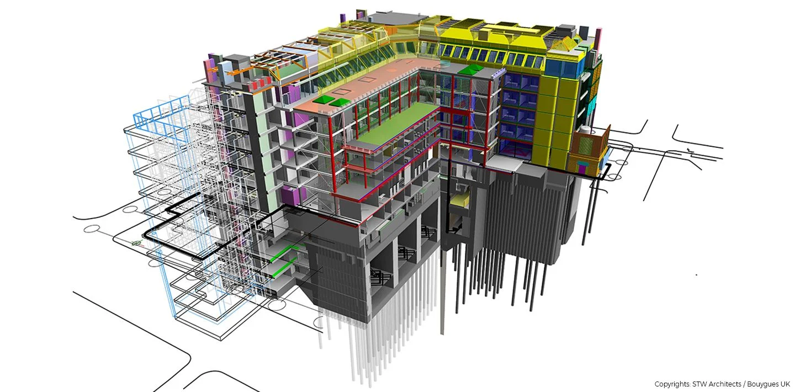

BIM이란?
BIM은 건축물의 물리적·기능적 특성을 디지털 3D 모델로 구현하여 설계, 시공, 유지보수까지 전 과정에 걸쳐 정보를 통합 관리할 수 있게 해주는 혁신적인 기술입니다. 기존 2D 도면에 비해 훨씬 직관적이며, 다양한 이해관계자 간의 협업을 촉진합니다.
BIM의 주요 장점
- 정확한 3D 설계 – 시각화로 오류를 줄이고 설계의 품질을 향상
- 효율적인 협업 – 구조, 전기, 설비 등 다양한 분야가 동일한 모델을 공유
- 비용 절감 – 자재 산출 자동화, 공정 최적화, 충돌 사전 검토로 비용 감소
- 시공 시뮬레이션 – 공정(4D), 비용(5D), 에너지(6D)까지 분석 가능
- 유지보수 정보 제공 – 시설물의 수명 주기 전반에 걸쳐 정보 관리 가능
BIM 활용 분야
BIM은 단순 건축 설계뿐 아니라 토목, 인프라, 기계·전기·설비(MEP), 스마트 시티 구축, 공공 시설 관리 등 다양한 분야에서 활용됩니다. 최근에는 AI와 결합해 더욱 자동화된 설계와 시공 관리가 가능해지고 있습니다.
BIM 활용 사례
국내외 다양한 프로젝트에서 BIM은 실질적인 효과를 보이며 활용되고 있습니다.
- 설계-시공 통합 협업 – BIM을 통해 건축 설계자와 시공자가 동일한 3D 모델을 기반으로 협업하여, 설계 오류를 줄이고 시공 품질을 향상시킴.
- 공공 인프라 구축 – 고속철도, 고속도로, 항만 등 교통 및 SOC 인프라 설계 시, 구조적 안정성과 시공 편의성을 사전에 검토하여 공정 지연과 비용 초과를 방지함.
- 시설물 유지관리 – 준공 후 BIM 데이터를 활용해 건축물의 수리, 교체, 검사 등 유지보수를 체계적으로 진행 가능.
- 리모델링 및 리뉴얼 – 기존 건물의 정보를 3D로 스캔해 BIM 모델로 구현하면, 구조 변경이나 개조 작업이 훨씬 정밀하고 안전하게 수행 가능.
- 스마트 시티 구현 – BIM을 기반으로 도시 전체를 디지털 트윈으로 구현해, 도시 계획, 환경 분석, 에너지 최적화 등에 활용됨.
미래 전망
BIM은 단순한 설계 도구를 넘어서 디지털 트윈(Digital Twin) 기술, 클라우드 협업, 사물인터넷(IoT) 등과 융합되며 미래 스마트 건설의 핵심 기술로 자리잡고 있습니다.